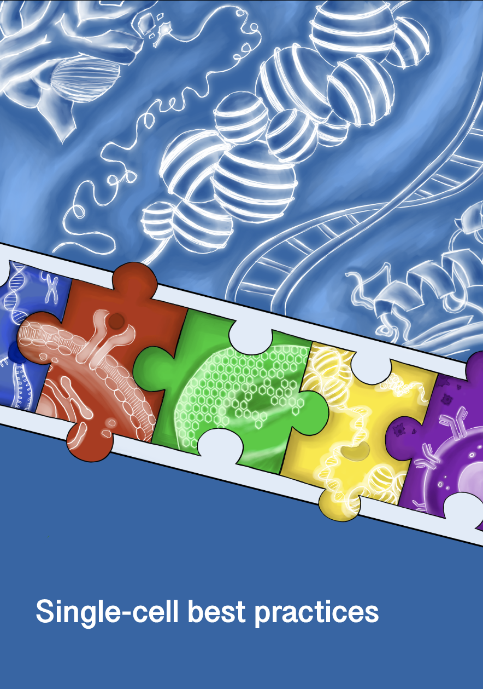

Single-cell best practices#
Warning
This project is still work in progress and the content is not final yet. If you have early feedback feel free to open issues and to get in touch with us. Interested in contributing? Please have a look at theislab/single-cell-best-practices
Introduction#
The human body is a complex machine that heavily relies on the basic units of life - cells. These cells exhibit remarkable diversity, varying in type and function, and can undergo significant transitions during development, in response to disease, or during regenerative processes. This cellular heterogeneity manifests in their structure, function, and gene expression profiles. Disruptions to this delicate balance can lead to systemic dysregulation, contributing to severe conditions such as cancer [Macaulay et al., 2017]. Therefore, understanding how cells behave under normal and perturbed states is critical for deepening our understanding of entire cellular systems.
To address this challenge, researchers employ a variety of strategies, with one of the most promising being profiling cells at the individual level. Traditionally, each cells’ transcriptome was primarily examined in a process known as single-cell RNA sequencing. However, recent advancements in single-cell genomics now enable the integration of transcriptome data with spatial, chromatin accessibility, or protein-level information. These developments not only enhance our understanding of complex regulatory mechanisms but also introduce additional challenges in data analysis.
Currently, analysts are faced with an overwhelming array of computational tools - over 1,700 methods dedicated to single-cell RNA-seq alone [Zappia and Theis, 2021]. Navigating this extensive landscape to produce reliable, cutting-edge results poses a significant challenge.
What this book covers#
This book aims to guide both beginners and experienced professionals in best practices of single-cell sequencing analysis. It provides a comprehensive overview of essential analytical steps, from preprocessing to visualization and statistical evaluation and beyond. By following this book, you will acquire the skills to independently analyze unimodal and multimodal single-cell sequencing data.
The recommendations presented are grounded in external benchmarks and reviews wherever possible, ensuring the approaches taught are both effective and reliable. Additionally, this book is meant to be a living resource, constantly updating to keep up with new discoveries and the latest best practices.
What this book does not cover#
This book does not cover fundamental concepts of biology or computer science, including basic programming skills. Nor does it serve as an exhaustive catalog of all available tools for specific tasks. Instead, it emphasizes well-validated methods that have been externally benchmarked or recognized as community standards. When such external validation is unavailable, our recommendations are only based on our extensive practical experience.
Who should read this book#
This book is designed for a diverse audience with an interest in single-cell data analysis, including biologists looking to gain practical data analysis skills, computer scientists seeking to explore the biological underpinnings and computational challenges of single-cell data, and bioinformaticians aiming to refine their knowledge or stay updated with best practices. Whether you’re a beginner looking to grasp the basics or an experienced analyst aiming to refine your skills and adopt efficient workflows, this book will guide you through the complexities of single-cell analysis.
Structure of the book#
Each chapter corresponds to a distinct phase of a typical single-cell data analysis project. While an analysis workflow should generally follow the order of the chapters, flexibility is encouraged depending on specific downstream analysis objectives. Each chapter is supplemented with extensive references, and readers are encouraged to consult these primary sources for a deeper understanding. Although we strive to provide comprehensive background information, our summaries and the glossary may not capture the full scope of reasoning behind every recommendation.
Prerequisites#
Bioinformatics is inherently multidisciplinary, requiring knowledge of both biology and computer science. Single-cell analysis is particularly demanding, as it integrates multiple subfields and often involves large datasets. While this book cannot cover all the necessary foundational knowledge for computational single-cell analysis, we recommend the following resources to enhance your learning experience:
Basic Python programming: Familiarity with control flow (e.g., loops, conditional statements), basic data structures (e.g., lists, dictionaries, sets), and key libraries such as Pandas and Numpy is essential. Newcomers can benefit from the free book Automate the boring stuff with Python.
AnnData and Scanpy: While prior experience with these tools is helpful, it is not strictly required. This book provides a detailed introduction to AnnData and outlines the workflow for working with Scanpy. However, it does not cover the full range of Scanpy’s functionalities. To deepen your understanding, we recommend exploring the scanpy tutorials and referring to the scanpy API reference as needed.
Multimodal Data Analysis: For readers who have interest in multimodal data analysis, understanding tools like muon and MuData is beneficial. The muon tutorials provide a solid introduction to this field.
Basic R Programming: Knowledge of control flow and basic data structures suffices. New learners can refer to R for data science for a comprehensive introduction.
Basic Biology: While this book offers a rough overview of data generation, it does not cover fundamental topics like DNA, RNA, and proteins. Molecular Biology of the Cell by Bruce Alberts et al. is a recommended resource for those new to molecular biology.
Peer-review#
Although the content has been reviewed by multiple authors, editors, and external experts, this book has not undergone formal peer review. We kindly encourage you to provide constructive feedback to help refine and improve the material. To share your thoughts:
Open an Issue: You can open an issue on our GitHub repository for any suggestions, questions, or clarifications you have.
Be Specific: When providing feedback, please be as specific as possible. For example, if you have a suggestion for improving a section, point out the exact part and explain why you think it can be enhanced.
Provide Sources: If applicable, we encourage you to provide sources or references to support your feedback or suggestions. This helps ensure the material stays accurate and up to date.
Discuss with the Community: Feel free to comment on existing issues to join ongoing discussions. This can help us refine the content based on community input.
Citation#
If you found our content helpful for your research, please cite it as:
Heumos, L., Schaar, A.C., Lance, C. et al. Best practices for single-cell analysis across modalities. Nat Rev Genet (2023). https://doi.org/10.1038/s41576-023-00586-w
Contributing#
We invite the community to contribute to the ongoing improvement of this tutorial and teaching material. Please read contributing for further instructions.
In case of questions or problems, please get in touch by posting an issue in this repository.
Alternative formats#
PDF versions of this book are available on our releases page.
Contact us#
You can report issues and requests in our issue tracker.
For inquiries, speaking engagements, or collaboration opportunities, please email:
Anna Schaar: anna.schaar@helmholtz-munich.de
Lukas Heumos: lukas.heumos@helmholtz-munich.de
License#
This book is licensed under the Apache 2.0 license.
References#
Iain C. Macaulay, Chris P. Ponting, and Thierry Voet. Single-cell multiomics: multiple measurements from single cells. Trends in genetics : TIG, 33(2):155–168, Feb 2017. S0168-9525(16)30169-X[PII]. URL: https://doi.org/10.1016/j.tig.2016.12.003, doi:10.1016/j.tig.2016.12.003.
Luke Zappia and Fabian J. Theis. Over 1000 tools reveal trends in the single-cell rna-seq analysis landscape. Genome Biology, 22(1):301, Oct 2021. URL: https://doi.org/10.1186/s13059-021-02519-4, doi:10.1186/s13059-021-02519-4.